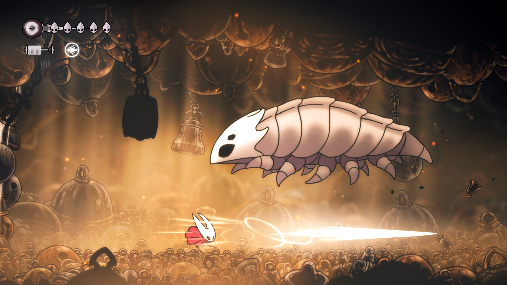

Hollow Knight: Silksong est la suite très attendue du chef-d’œuvre indépendant Hollow Knight. Ce nouvel opus nous plonge dans un monde inédit, mystérieux et vertical, à travers les yeux de Hornet, une guerrière agile et redoutable. Attendu depuis des années, le jeu réussit le pari risqué de succéder à un titre culte, tout en affirmant sa propre identité. Entre exigence, beauté et profondeur, Silksong est une aventure envoûtante, exigeante, et surtout, mémorable.
 Source: Team Cherry
Source: Team Cherry
Le gameplay de Silksong se distingue rapidement de celui de son prédécesseur. Hornet est plus rapide, plus acrobatique, et son style de combat est basé sur la fluidité et l'agression. Chaque affrontement est un ballet nerveux, où les réflexes et la précision sont constamment mis à l’épreuve. Le système de soin, basé sur la soie, offre une nouvelle dynamique, plus risquée mais aussi plus gratifiante. L’exploration, fidèle à la tradition du genre metroidvania, est vaste et dense, pleine de secrets à découvrir, de raccourcis ingénieux et de défis relevés. On ressent à chaque instant une grande maîtrise du level design et une volonté de pousser le joueur à expérimenter.
Derrière Silksong, on retrouve Team Cherry, un petit studio indépendant australien composé de développeurs passionnés. Leur philosophie artisanale se ressent à chaque instant du jeu : aucune décision ne semble dictée par autre chose que l’amour du détail et la volonté de proposer une expérience sincère. Plutôt que de livrer une simple extension de Hollow Knight, ils ont choisi de tout repenser : nouveau personnage, nouveau monde, nouvelles mécaniques. Le résultat est à la hauteur de l’attente. Leur transparence et leur proximité avec la communauté ont aussi contribué à forger une relation de confiance rare dans l’industrie vidéoludique actuelle.
Score Final
10/10

Team Chery rend hommage à un fan
Un fan du premier jeux Hollow Knight qui n'a pas vécu pour voir la sortie de deuxième jeux...
Voir l'article

"Hollow Knight Silksong est trop difficle!"
Plusieurs joueurs ayant mit la main sur une copie de Hollow Knight Silksong se plaigne de...
Voir l'article
Hollow Knight Silksong fait planter des serveurs
La sortie de Hollow Knight Silksong cause des problèmes sur les plateformes en ligne...
Voir l'articleCatégories: